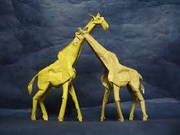

Origami Is Cool
About
Follow Us

The giraffe is an African artiodactyl mammal,
tallest living terrestrial animal and the largest ruminant. It is traditionally considered to be one species,
Giraffa camelopardalis, with nine subspecies.
Fun Facts:
- Giraffes are the tallest mammals on Earth
- They can run as fast as 35 miles an hour over short distances, or cruise at 10 mph over longer distances
- A giraffe's neck is too short to reach the ground.
- Giraffes only need to drink once every few days.

Chameleons or chamaeleons are a distinctive and highly specialized clade of Old World lizards with 202 species described as of June 2015.
These species come in a range of colors, and many species have the ability to change color.
Fun Facts:
- Most chameleons have a prehensile tail that they use to wrap around tree branches.
- Their hands and feet have large toes that help them cling to branches.
- They can change color for camouflouaging